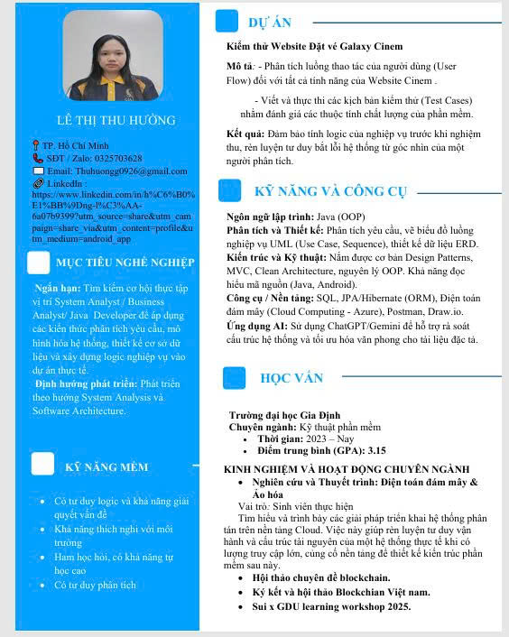

Ngắn hạn: Tìm kiếm cơ hội thực tập vị trí System Analyst/ Business Analyst/ Java Developer để áp dụng các kiến thức phân tích yêu cầu, mô hình hóa hệ thống, thiết kế cơ sở dữ liệu và xây dựng logic nghiệp vụ vào dự án thực tế.
Định hướng phát triển: Phát triển theo hướng System Analysis và Software Architecture.
Kiểm thử Website Đặt vé Galaxy Cinem
Mô tả: - Phân tích luồng thao tác của người dùng (User Flow) đổi với tất cả tính năng của Website Cinem
- Viết và thực thi các kịch bản kiểm thử (Test Case) nhằm đánh giá các thuộc tính chất lượng của phần mềm
Kết quả: Đảm bảo tính logic của nghiệp vụ trước khi nghiệm thu, rèn luyện tư duy bắt lỗi hệ thống từ góc nhìn của một người phân tích
Ngôn ngữ lập trình: Java (OOP)
Phân tích và Thiết kế: Phân tích yêu cầu, vẽ biểu đồ luồng nghiệp vụ UML (Use Case, Sequence), thiết kế dữ liệu ERD
Kiến trúc và Kỹ thuật: Nắm được cơ bản Desgin Pattems, MVC, Clean Architecture, nguyên lý OOP. Khả năng đọc hiểu mã nguồn (Java, Android)
Công cụ/Nền tảng: SQL, JPA/Hibemate (ORM), Điện toán đám mây (Cloud Computing - Azure), Postman, Draw.io
Ứng dụng AI: Sử dụng ChatGPT/Gemini để hỗ trợ rà soát cấu trúc hệ thống và tối ưu hóa văn phong cho tài liệu đặc tả
Trường đại học Gia Định
Chuyên ngành: Kỹ thuật phần mềm
KINH NGHIỆM VÀ HOẠT ĐỘNG CHUYÊN NGÀNH
Vai trò: Sinh viên thực hiện
Tìm hiểu và trình bày các giải pháp triển khai hệ thống phân tán trên nền tàng Cloud. Việc này giúp rèn luyện tư duy vận hành và cấu trúc tài nguyên của một hệ thống
thực tế khi có lượng truy cập lớn, cũng cố nền tảng để thiết kế kiển trúc phần mềm sau này